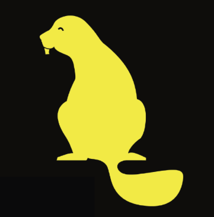
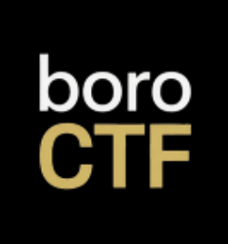
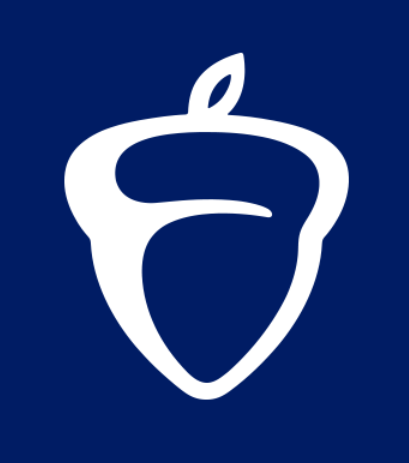

👋 Hey, what's up? I am
Vincent Huynh
17-year-old high school senior who recently got into cybersecurity. Now, I’m an IT security enthusiast and aspiring cybersecurity professional + making the terminal my personality since yesterday!
Background
I'm a high school student who recently gotten into the dynamic field of Cybersecurity. Although still exploring, I am passionate about understanding how systems work, how they can be secured, and how security challenges can be solved. My experience spans hands-on technical work through CTFs, cybersecurity programs, research, and personal projects, with a growing foundation in networking, Linux, digital forensics, OSINT, and ethical hacking.
I'm currently focused on expanding my skills across both offensive and defensive cybersecurity, while strengthening my foundations in networking, system administration, programming, and security operations. I enjoy tackling challenging problems, learning through hands-on experimentation, and turning what I learn into practical projects.
Outside of cybersecurity, I enjoy building projects, participating in competitions, volunteering, and continuously exploring new areas of technology. I'm always looking for opportunities to learn, collaborate, and take on challenges that push me beyond what I already know.
- Based inDallas, Texas (United States)
- ExploringSOC, Penetration Testing, Security Engineering, Cloud Security
- tech stack
- Python, Java, HTML, Obsidian, Git
- languages
- English (Native), Vietnamese (Native)
- skills
- Cybersecurity, Collaboration, Problem-Solving, Creativity, Adaptability
- learning
- Networking, Operating Systems, IT infrastructure, Security Concepts, Threats, Vulnerabilities, Scripting, Red Teaming, Blue Teaming
- uptime
- calculating…
Education & Academics
-
Hebron High School
August 2023 — May 2027Senior (Grade 12) · Carrollton, Texas
• 3.96 unweighted / 5.15 weighted GPA
• Ranked 48 of 865 (top 5.5%)
• AP Coursework: AP Calculus AB, AP Computer Science A, AP Pre-Calculus, AP Government, AP Macroeconomics, AP Literature and Composition, AP United States History, AP World History, AP Environmental Science, AP Art History, AP Language and Composition
-
Cisco Networking Academy
2026 — PresentCybersecurity & Networking · Remote (Online)
Currently enrolled in the Cisco Networking Academy (online), where I am building a foundational understanding of ethical hacking, cybersecurity, networking concepts, linux, and programming.
Experience
Programs, competitions, volunteering, and hands-on experiences that shaped my journey.
-
Cyber Operations Student Researcher & Intern
July 2026 — August 2026MIT Beaver Works Summer Institute · Cambridge, Massachusetts · Internship · Remote
• 1 of 29 students selected nationally for the highly competitive MIT Beaver Works Summer Institute's 2026 Cyber Operations program, an intensive 4-week experience focused on hands-on cybersecurity, computing systems, and security engineering.
• Engaged in rigorous, hands-on coursework and labs exploring computing systems from foundational hardware and security concepts to modern architectures, with topics including cryptography, networking, reverse engineering, AI/ML, firmware, hardware, software, human factors, quantum computing, DevOps, IoT, digital forensics, steganography, and side-channel analysis.
• Developed skills in digital forensics, networking, cryptography, computing systems/architecture, vulnerability identification and mitigation, and defensive strategies through collaborative, project-based learning, culminating in a capstone cybersecurity project and event.
-
CTF Competitor
July 2026 — August 2026MIT Beaver Works Summer Institute · Cambridge, Massachusetts · Internship · Remote
• Participated in the MIT BWSI Cyber Operations 2026 Capstone Cybersecurity Capture The Flag (CTF) event, finishing 3rd place, and applied hands-on cybersecurity techniques to solve challenges under time constraints.
• Collaborated with team "Br1lliant Be4vers" to investigate incidents, analyze systems, and identify vulnerabilities across digital and multimedia forensics, Linux system administration, cryptography, steganography, OSINT, network analysis, reverse engineering, binary exploitation, and miscellaneous challenges.
-
Hackathon Competitor & Winner
July 2026MIT Beaver Works Summer Institute · Cambridge, Massachusetts · Internship ·Remote
• Built "Operation Black Vault", a browser-based cybersecurity escape-room CTF that turns learning into an interactive mission, with "Br1lliant Be4vers" team for MIT BWSI Cyber Operations Hackathon 2026.
• Players infiltrate a corrupt bank's internal network, solve hands-on cybersecurity challenges, and uncover hidden evidence while navigating a simulated digital environment. Designed to make cybersecurity engaging and accessible, the project combines gamification, problem-solving, and practical security concepts into an immersive experience.
-
CTF Team Co-Captain & Competitor
June 2026BoroCTF 2026 · Part-Time · Remote (Online)
• Competed in a 810+ team & 1620+ participant live multi-day international cybersecurity CTF competition under a team named "idktheflagbro" with 2 other teammates.
• Placed 40th out of 813 teams globally, ranking top 4% overall/internationally.
• Placed 20th out of 174 hs teams globally, ranking top 11% in the competitive high school division.
• Solved cybersecurity challenges across OSINT, digital forensics, web exploitation, cryptography, binary exploitation, networking, reverse engineering, GEOSINT, and misc. utilizing tools such as Kali Linux tools on VirtualBox VM, open-source security frameworks, and AI-assisted analysis for research and debugging support.
-
NHS Inductee / Member
May 2026 — PresentNational Honor Society · Dallas, Texas · Part-Time · On-Site
• Member of the National Honor Society (NHS), an organization honoring academic achievement, leadership, service, and character.
• Participated in volunteer activities and school initiatives while upholding high academic standards.
-
Director of Volunteers & Community Volunteer
September 2024 — PresentFriends of the Carrollton Public Library · Carrollton, Texas · Part-Time · On-Site
• Assisted for 60+ hours and led a group of volunteers in community service activities at the Carrollton Public Library at Hebron & Josey and the Carrollton Public Library at Josey Ranch Lake.
• Supported weekly library operations by organizing and sorting books into boxes, maintaining shelves and storage, delegating tasks, and collaborating with volunteers to ensure an efficient workflow.
-
Community Volunteer
January 2026 — February 2026Huong Dao Vipassana Bhavana Center Inc. · Fort Worth, Texas · Part-Time · On-Site
• Volunteered at the Vietnamese Huong Dao Temple in Fort Worth, TX, assisting with the planning and execution of major community events, including Vietnamese New Year (Tết) celebrations.
• Assisted with food preparation, decorating, venue setup, and cleanup to support smooth event operations. Also helped prepare for the 108-Day "Walk for Peace" monk arrival by assisting with decorations, logistics, and maintaining a clean and welcoming environment.
-
Digital Content Creator & Animator
2020 — 2024Scratch Foundation · Dallas, Texas · Part-Time · Remote
• 3.5M+ views, 35k+ followers on Scratch
• Created, programmed, and published original humorous animations, skits, tutorials, and collaborative projects that became widely recognized across the Scratch community during the COVID-19 pandemic, establishing myself as one of the platform's most recognized animators of the era. My work entertained and inspired children worldwide, bringing laughter, encouraging creativity, and helping create lasting childhood memories for many while fostering a positive and welcoming online community during a time of global isolation, bringing people together through laughter, creativity, and shared experiences.
• Through creating Scratch animations, I developed skills in programming, animation, storytelling, graphic design, creative problem-solving, audience engagement, and community building while growing a large online following.
-
Digital Content Creator
2023 — 2024YouTube · Dallas, Texas · Part-Time · Remote
• 1.3M+ views, 6k+ subscribers on YouTube
• Produced Minecraft videos as a top North American competitive PvP player, creating tutorials, gameplay analyses, montages, and collaborations that helped players improve their skills while fostering an engaged gaming community.
• Through creating Minecraft content on YouTube, I developed skills in video editing, storytelling, graphic design, audience engagement, content strategy, and community building while growing a large online following.
Projects, Write-ups, & Labs
Projects, Tools, Notes/Resources, Research, Labs, and Write-ups — click projects to open the github repo.
Operation Black Vault
Operation Black Vault is a browser-based cybersecurity escape-room CTF built by "Br1lliantBe4vers" for the MIT BWSI Cyber Operations Hackathon 2026. Infiltrate Black Vault Bank, investigate 20 rooms, solve cybersecurity challenges, uncover critical evidence, and escape within 45 minutes before AEGIS wipes everything.
- CSS
- HTML
- JavaScript
- JSON
- Luicide
- MJS
- React
- TS
- TSX
- Vercel
- Git
Personal Portfolio Website
A personal cybersecurity portfolio showcasing my projects, CTF write-ups, hands-on labs, achievements, certifications, and experiences as I continue developing my skills and exploring the world of cybersecurity.
- HTML
- CSS
- JavaScript
- Google Fonts
MIT BWSI — Cyber Operations Notes
Personal lecture notes, and study materials/key concepts from the MIT Beaver Works Summer Institute (BWSI) Cyber Operations program.
- Obsidian
- Markdown
Cisco Networking Academy — Introduction to Cybersecurity Notes
My Cisco Networking Academy notes: where I learned cybersecurity basics to protect my personal digital life and gain insights into the biggest security challenges companies, governments, and educational institutions face today.
- Obsidian
- Markdown
Achievements
Recognitions, certifications, and milestones from my academic and technical journey.
Introduction to Cybersecurity (Certification)
Cisco Networking Academy · 2026
BWSI Cyber Operations Pre-Requisite Course (Certification)
MIT Lincoln Laboratory · 2026

1st Place Winner — Cyber Operations Hackathon 2026
MIT Beaver Works Summer Institute · 2026

Co-Founded Team Placed Top 4% Globally & Top 11% HS Division
BoroCTF · 2026

AP Scholar with Distinction Award
The College Board · 2026
National Recognition Program — School Recognition Award (2026)
The College Board · 2026
Latin Hawk Award
Hebron High School · 2024
Let's connect :)
The fastest way to reach me is email — everything else is linked below.